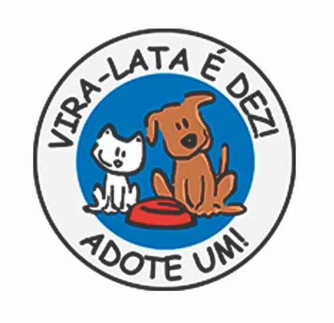
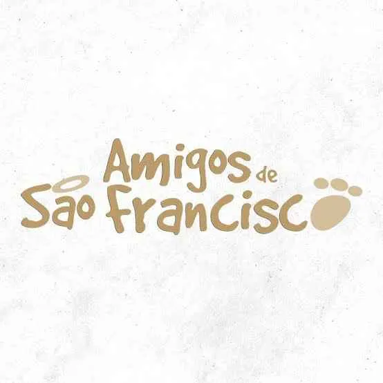
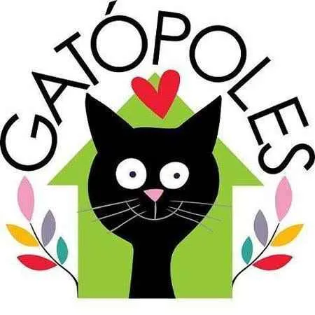

SUIPA
Referência de proteção animal. Consulte os canais oficiais para conhecer as formas atuais de adoção e apoio.
Localizar e conferir canaisProteção animal
Use os atalhos para localizar os canais oficiais e confirme diretamente horários, regiões atendidas e processos de adoção.
Referência de proteção animal. Consulte os canais oficiais para conhecer as formas atuais de adoção e apoio.
Localizar e conferir canaisOrganização voltada à proteção e ao bem-estar animal. Confirme ações e campanhas diretamente em seus canais.
Localizar e conferir canaisAtua com cães em situação de vulnerabilidade. Consulte os critérios vigentes para adoção e colaboração.
Localizar e conferir canais
Promove proteção e adoção responsável. Verifique pelos canais oficiais como conhecer os animais atendidos.
Localizar e conferir canaisTrabalha em defesa dos animais e em ações de adoção. Confira informações atualizadas diretamente com a instituição.
Localizar e conferir canaisIniciativa de proteção animal com atuação comunitária. Consulte seus canais para formas seguras de participar.
Localizar e conferir canais
Organização dedicada ao cuidado animal. Confirme a disponibilidade de adoções e voluntariado em seus canais.
Localizar e conferir canais
Iniciativa voltada à proteção e adoção de gatos. Consulte orientações atualizadas antes de iniciar o contato.
Localizar e conferir canaisA exibição destas referências não representa parceria formal nem validação institucional pelo Adota Pet.